Hemel Hempstead & nearby areas
Reliable home maintenance, done with care.
From decorating and garden care to decking, fencing, patios, tiling and practical repairs — one local service for the jobs that keep your home looking its best.
City & Guilds qualified
Fully insured
Local & reliable
Free quotes
Services with real project evidence
One trusted contact for your home and garden.
Choose the service you need. Each card uses photographs from work supplied for Badger Home Maintenance — not stock photography.
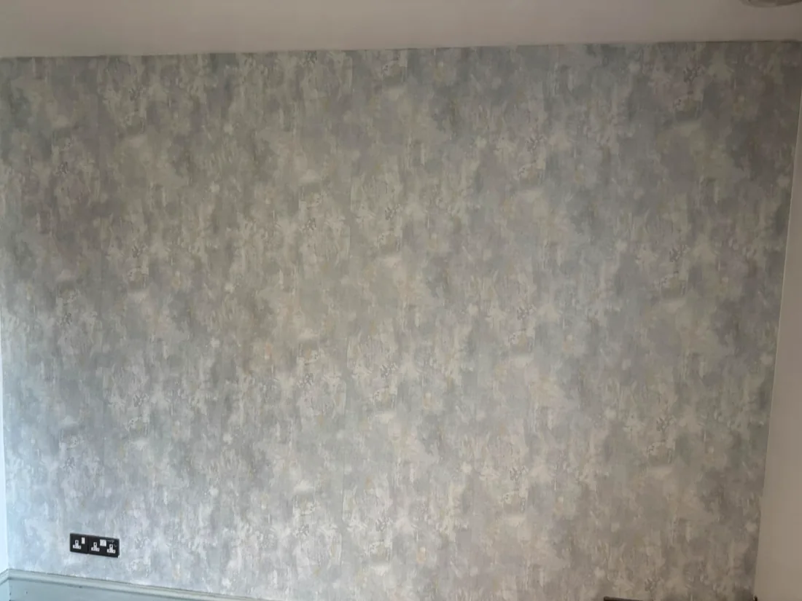
01
Painting & decorating
Preparation, wall repairs, painting, feature walls, touch-ups and finishing for a clean, durable result.
Ask about decorating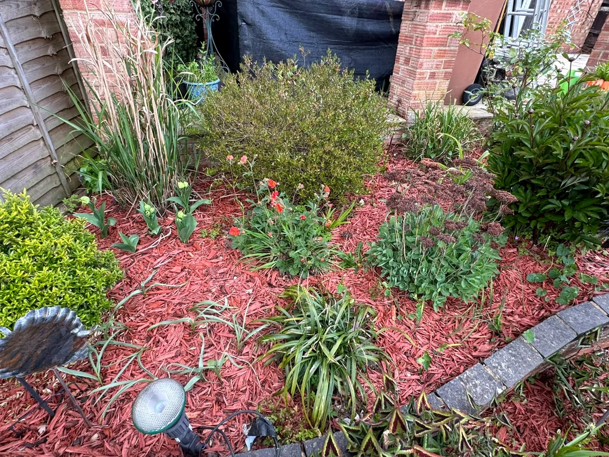
02
Garden maintenance
Weeding, pruning, planting, lawn care, mulching, tidy-ups, clearance and seasonal garden improvement.
Ask about garden work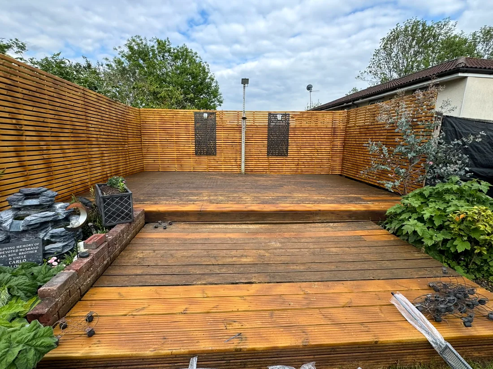
03
Decking & fencing
Deck board replacement, structural timber repairs, restoration, staining, screening, fence repairs and new timber work.
Ask about decking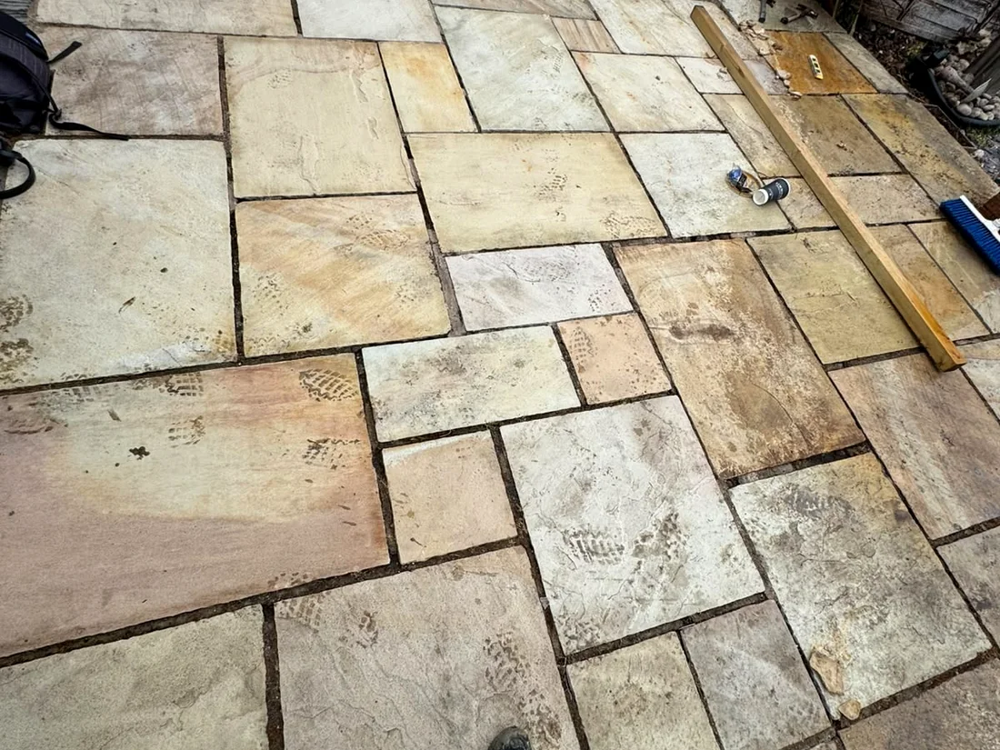
04
Patios, paving & exterior care
Patio repair, repointing, slab work, paving preparation, pressure cleaning and general outdoor improvement.
Ask about patios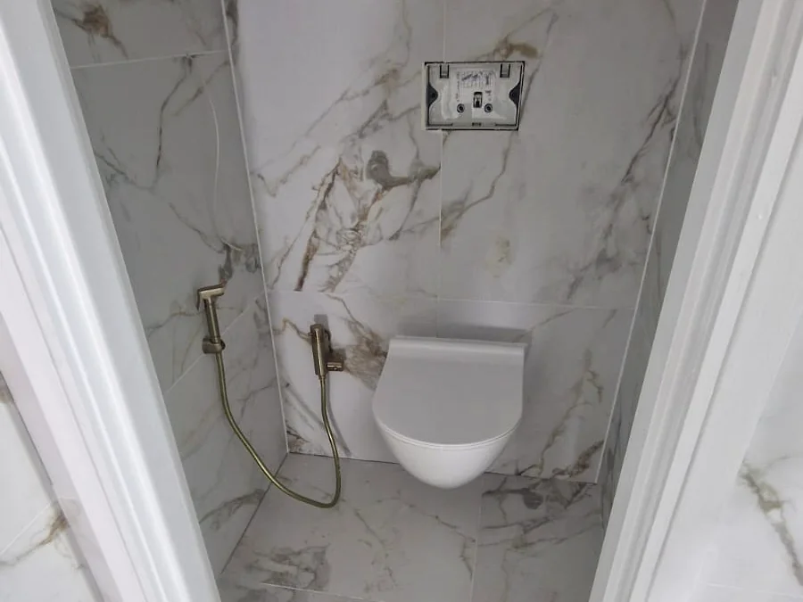
05
Tiling, bathroom & small plumbing
Wall and floor tiling, sealing, bathroom finishing and practical small plumbing repairs for small-to-medium projects.
Ask about bathroom work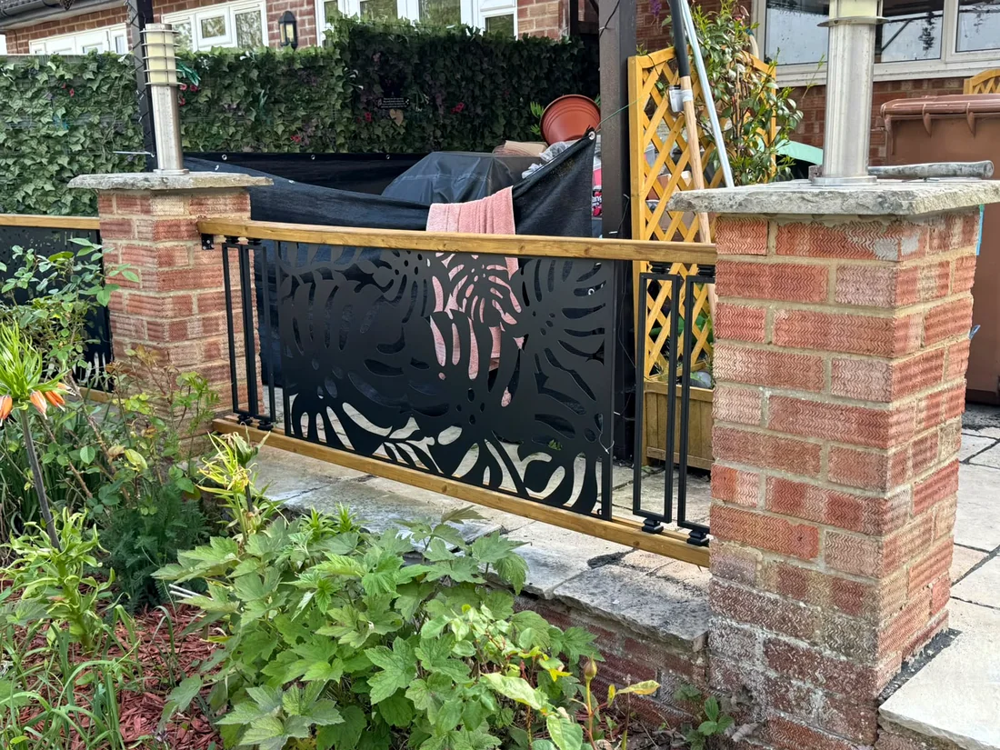
06
Carpentry & odd jobs
Timber repairs, railings, shelving, doors, fixtures, fittings, flat-pack assembly and practical household jobs.
Ask about a small job
Also available:
Gutter cleaningSmall plumbing repairsPlasterboard & minor repairsFlooringFence paintingGeneral tidy-upsMoving / furniture helpExterior maintenance
Before & after
Drag the line. See the difference.
The strongest proof is the work itself. These comparisons show real stages from supplied project photographs.

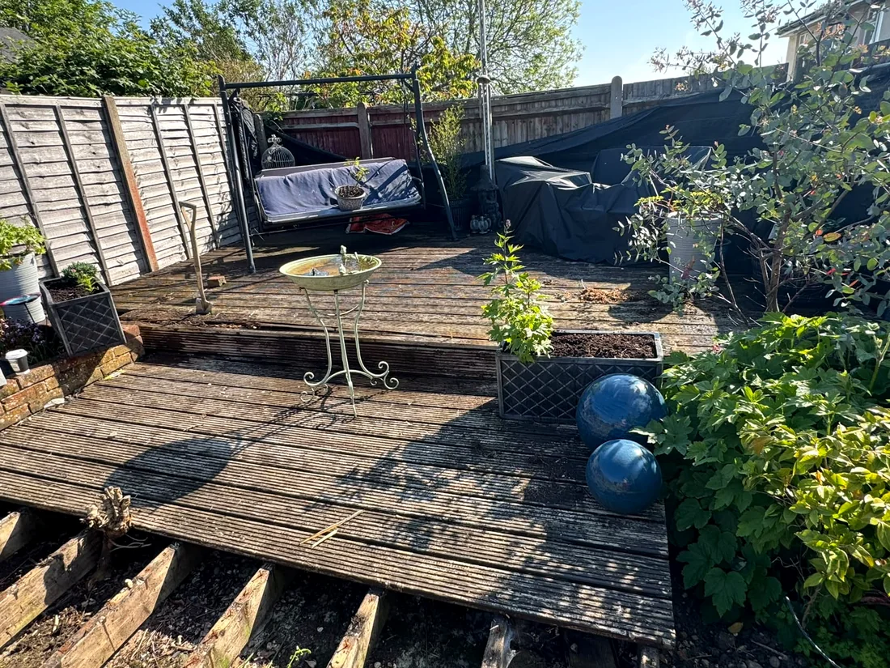
Decking restoration
Damaged and weathered areas were repaired, boards replaced where needed and the space upgraded with modern privacy screening.
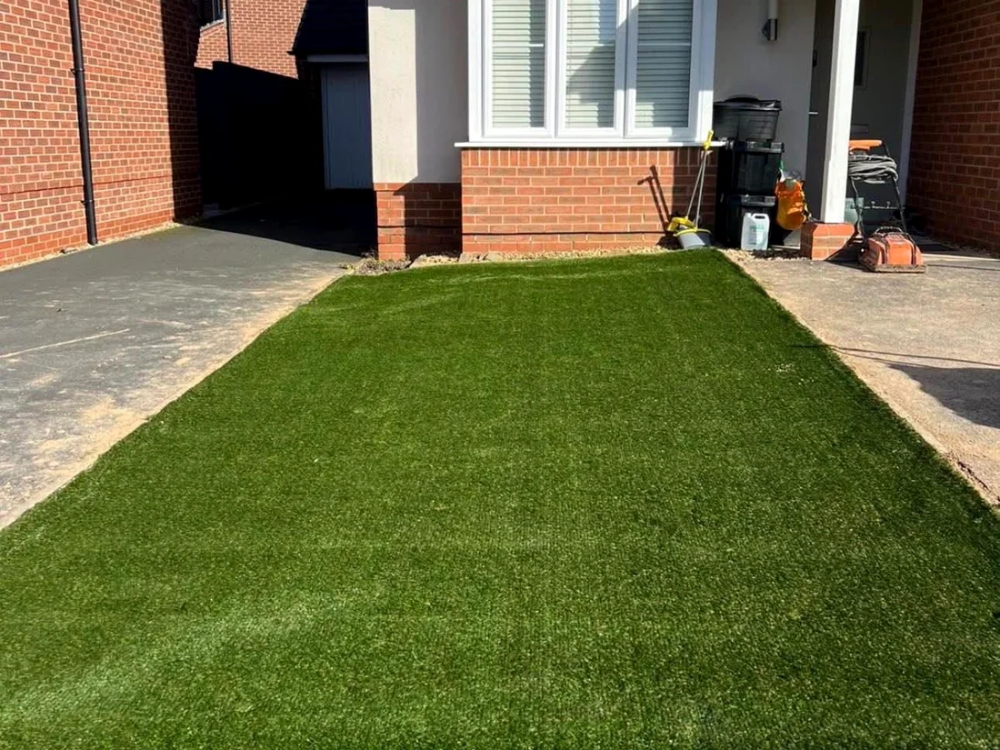
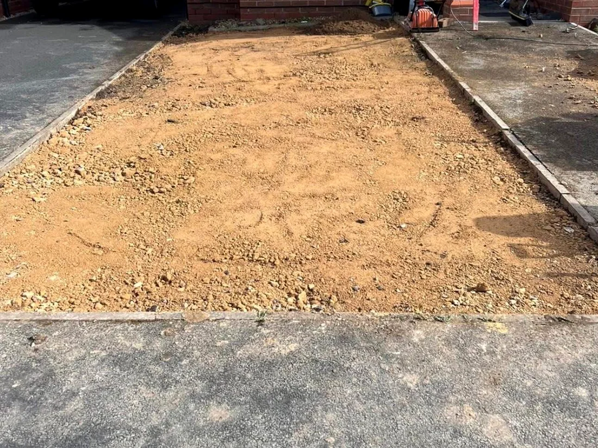
Garden ground preparation & turf
The area was prepared and levelled before a fresh lawn finish created a cleaner, greener entrance.

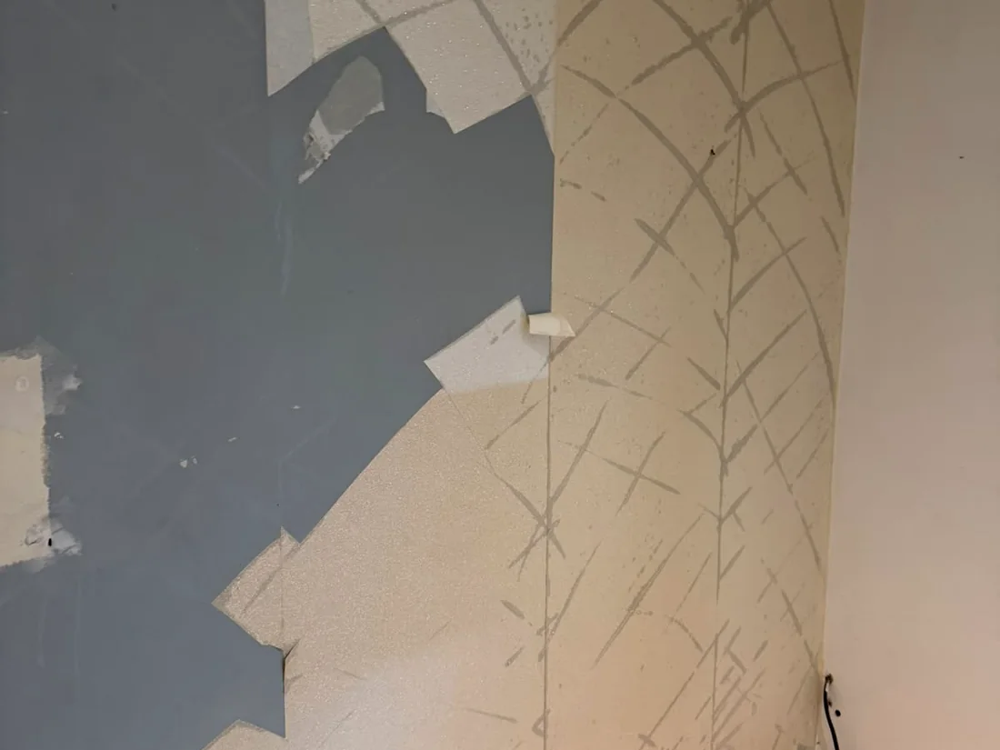
Decorating transformation
Preparation and finishing produced a tidy feature wall with a much more complete, polished appearance.
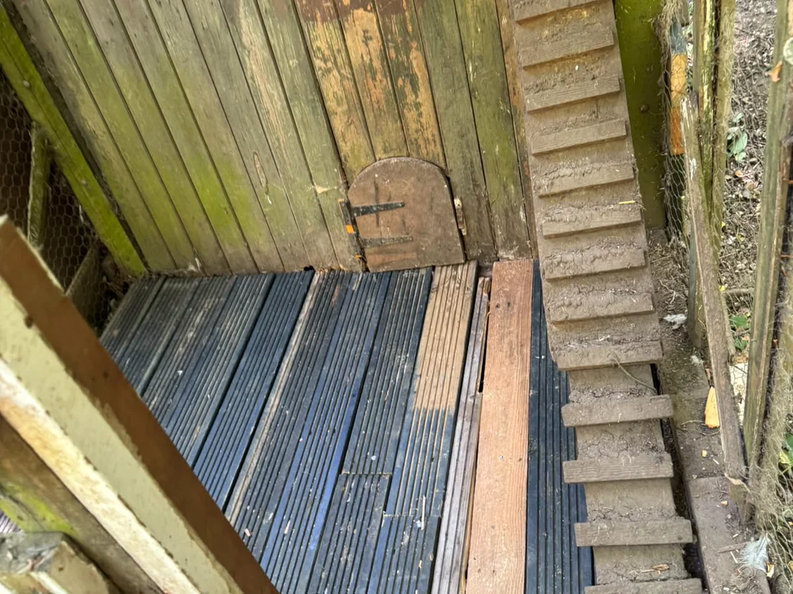
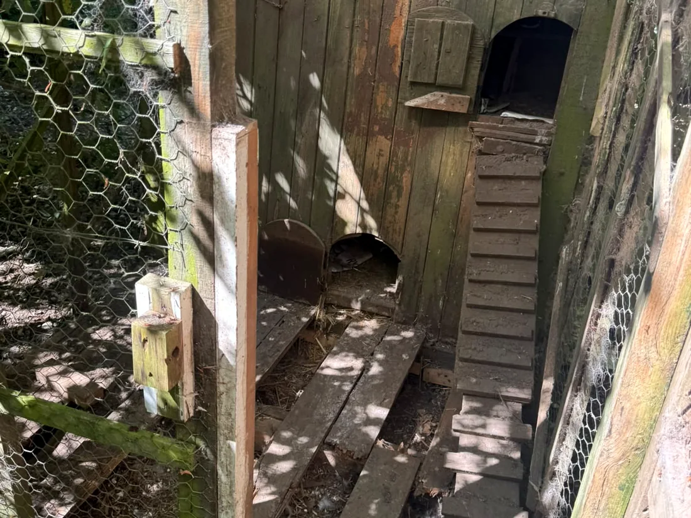
Timber floor repair
Unsafe, deteriorated flooring was removed and replaced to create a more stable, practical surface.
Real work. Real results.
Selected project gallery.
Only a selection is shown so the site stays quick and easy to use on a phone. Tap any image to view it larger.
Work in progress
Short project videos.
Videos are click-to-play, so they do not slow the first page load on mobile.
Garden care
Hands-on garden maintenance and finishing.
Tiling work
A short look at the work behind the final finish.
Ground preparation
Preparation work for a durable outdoor result.
Customer feedback
What customers say.
★★★★★“Excellent service and very professional work.”
★★★★★“Reliable handyman and great communication.”
★★★★★“Very clean work and fair pricing.”
Local service, professional standards
Qualified, experienced and straightforward.
Badger Home Maintenance provides practical help for homeowners who want a dependable local contact for maintenance, decorating and outdoor work. The aim is simple: understand the job, explain the plan clearly and leave the area tidy.
- City & Guilds Level 2 qualified
- Painting & decorating trained
- Public liability insured
- Clear quotations before work starts
- Friendly, respectful service
 OnrBadger Home Maintenance
OnrBadger Home MaintenanceService area
Based in Hemel Hempstead.
Regular local coverage includes Hemel Hempstead and nearby communities. For work a little further away, send the postcode and project details and we can check availability.
Hemel HempsteadSt AlbansWatfordBerkhamstedKings LangleyAbbots LangleyHarpendenTring
Open Hemel Hempstead in Google Maps →
Free quotation
Tell us what needs doing.
For the quickest estimate, send a short description, your postcode and a few photos on WhatsApp. If you prefer email, use the form and we can reply to the address you provide.
Phone07775 443 049
Websitebadgerhomemaintenance.co.uk
Find Badger online
See more work and stay connected.